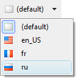
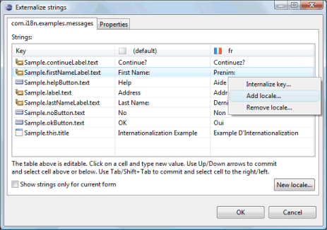

The tool has powerful internationalization (i18n) support. It can externalize component strings, create and manage resource bundles for multiple languages, switch locales on fly and edit translated strings in context.
The editor’s internationalization functions center around two items on the Toolbar - the Externalize Strings button and the drop down Locales list (which lists any locales defined for the current window).

To illustrate how to use various internationalization functions, we will start with the simple example shown below. This example includes a variety of widget types each containing a static string label.
The source for this example looks like the following. Note that all of the widget and window text elements are hard coded as string literals within the source. For an internationalized application, these strings need to be extracted to a resource (property) file and accessed via a key.
The Externalize Strings dialog
To begin the internationalization process, click the Externalize Strings button to open the Externalize Strings dialog. Initially, the dialog should present a list of all of the hard coded string properties assigned to any component within the window. If any NLS string externalization sources have been created for other classes in the same package, they will be listed in the Existing sources list (the list will be empty if no class in the package have been externalized). Select an existing source or create a new one by clicking the New… button.
Click the New… button to create a new NLS strings source (more than one source may be used). Four different types of sources are supported: Classic Eclipse message class, Modern Eclipse message class, Direct ResourceBundle usage and ResourceBundle in field. When a source type is selected, an example of what the code will look like is shown in the Example field.
For the Classic Eclipse message class style, you can create a new bundle accessor class or select an existing one. You can also specify the name and location of the resource bundle property file that should be used.
For the Modern Eclipse message class style, you can create a new bundle accessor class or select an existing one. You can also specify the name and location of the resource bundle property file that should be used.
For the Direct ResourceBundle usage style, you only need to specify the name and location of the resource bundle property file that should be used.
For the ResourceBundle in field style, in addition to the name and location of the resource bundle property file, you also need to specify the name of the field that the resource bundle should be assigned to.
Once the source has been created, click the Enable All button to select all of the strings within all of the components. Finally, click the Externalize button to begin the extraction process. The strings will be extracted to the source selected in the Existing sources list. Turning on the Copy strings to all locales option causes the extracted strings to be copied to all of the defined locales rather than only the default locale
Switch to the tab named after the resource bundle to see the results (if multiple sources are used, there will be a tab for each source). Each string will have been give a default key name based on the name of the window class, the variable name of the component and the property name of the string (usually just "text"). The icon representing each component is shown next to the key. Hovering over the icon will display a tooltip showing the widgets using that key.
Note that both the key names and string values are editable within the dialog. You can use the Enter and Tab keys to traverse the cells in the table.
If you change the value of a key so that it matches another existing key, you will need to confirm the change.
Messages class and properties files
After closing the dialog, note that a couple of additional files have been created. The first is a properties file (resource bundle) for the default locale that includes all of the keys and their associated values.
The second (optional) file is a Messages class whose job is to interface to the resource bundle via the key names. The classic Eclipse message class format looks like the following:

The modern Eclipse message class format looks like the following:
If we now take another look at the source view when using the ResourceBundle in field style, we see that all of the hard coded strings have been replaced calls to ResourceBundle with the string key names are arguments. Note that these keys themselves will remain constant across multiple languages and should be ignored for internationalization purposes. As such, they have all been marked with the //$NON-NLS-1$ end-of-line comment.
Adding a new locale
Once an default resource bundle has been created, it is easy to add a second (or third) language, by clicking the Externalize Strings button again. The dialog will open up focused on the first resource bundle tab. Click the New locale… button to open up the New Locale dialog. This dialog lists all of the known locales. You can select a Language code (like fr for French) and an optional Country code, or you can select from the list of All locales. You can also select whether the strings in the new locale should be copied from an existing locale (like the default locale) or left blank (copied from "none") using the drop down list in the Copy strings from field.
After selecting the new locale, click OK to add the locale as a new column in the table. The strings values will match the locale specified in the Copy string from field in the New Locale dialog. You can then enter translated values yourself or leave that task to a language expert. If you right-click on a cell, you can internalize a key (remove a row) or remove an entire locale (column).

Upon closing the dialog for the second time, you will see that a new properties file has been created for the new locale.
If you switch back to the Design View, you will see that the Locales drop down list now contains two value - one for the default locale and one for the second locale. Selecting the second locale will update the design view to show the appropriate string values in context.
Selecting the default locale will then restore the string values to the original language. Thus, you can use the Locales drop down list to quickly switch between languages in order to check the layout.
Editing string values in the design view
It is also important to note that you can continue to edit the string values within the Design View (either via direct edit or in the Property Pane) and the tool will automatically update the appropriate properties file. If the default locale is selected, the default properties file will be changed. If the second locale is selected its corresponding properties file will be updated. Conversely, if you edit the text in one of the property files, the Design View will be updated when the editor takes focus.
Adding new components
You may even add new widget with new text components to the window and incrementally externalize them via the Externalize Strings dialog. If you open the dialog and switch to the Properties tab, you will see a list of any non-externalized strings.
Select those strings and click Externalize them to add a new key/value pair to the properties file selected in the Existing sources list. If multiple locales have been defined and the Copy strings to all locales option is checked, the new key/value pair will be added to all of the locales simultaneously. Translate the secondary locales as necessary.
Using existing keys in the property pane
Enter keys directly into the property pane by prefixing them with an asterisks () or click the button to access the *String Editor and select a key from an existing resource bundle.
To use a value from a resource bundle, check the Use existing NLS source/key checkbox and click the Browse button. The Choose Key dialog will open where you can select a String source and a key/value pair. You can filter the list of key/value pairs that is shown by entering a string in the Search string field. By default, key names are searched but you can also search values or both keys and values by selecting the appropriate radio button at the bottom of the dialog.